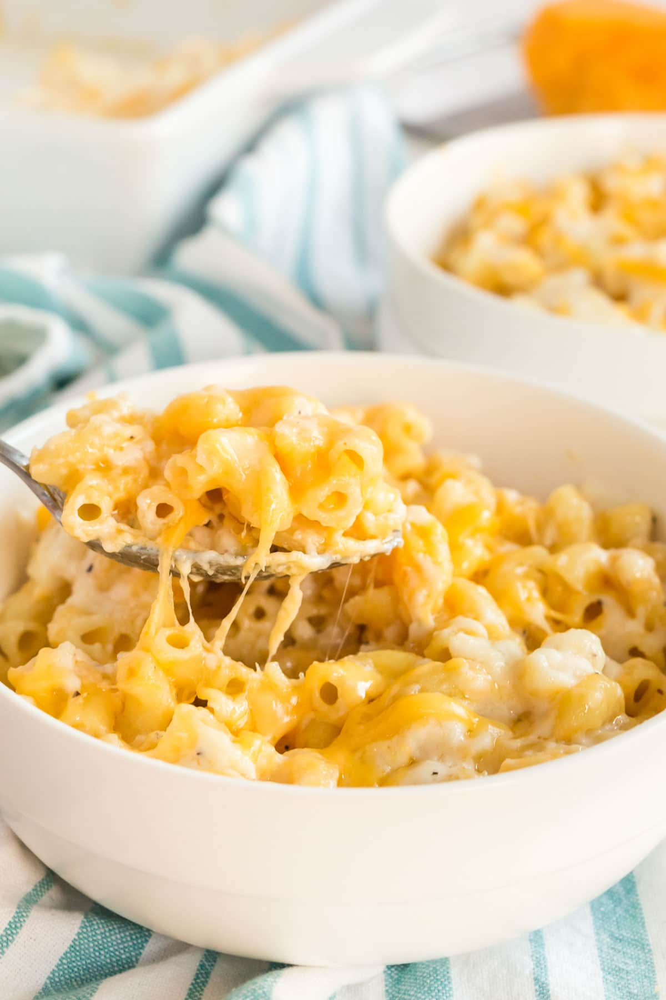

Macaroni and Cheese

Original recipe source here
Description
Similar to oil-based sauces, pesto is served best with longer cuts of pasta, like the corkscrew shape of Fusilli. Pesto works best with Bucatini, Capellini, thinner Spaghettini, and Fettuccine.
Recipe
- 1 (12 ounce) package macaroni
- 1 egg
- 2 cups milk
- 2 tablespoons butter, melted
- 2 ½ cups shredded Cheddar cheese
- salt and pepper to taste
Directions
- Preheat the oven to 350 degrees F (175 degrees C). Lightly grease a 2-quart baking dish.
- In a large pot of salted water, lightly boil the macaroni for about 5 minutes until half-cooked.
- Whisk the egg and milk together in a large cup. Add butter and cheese to the egg and milk. Stir well.
- Place the lightly cooked macaroni in the prepared baking dish. Pour the egg and cheese liquid over the macaroni, sprinkle with salt and pepper, and stir well. Press the mixture evenly around the baking dish.
- Bake uncovered, for 30 to 40 minutes, or until the top is brown.
Nutrional Facts
Per Serving: 968 calories; protein 45.6g; carbohydrates 92.6g; fat 45.4g; cholesterol 194.2mg; sodium 736mg.
Back to home page